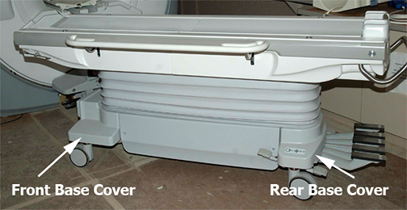
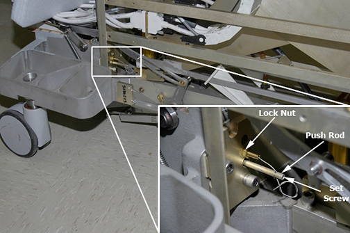
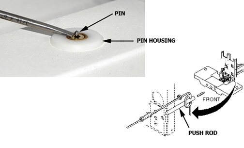
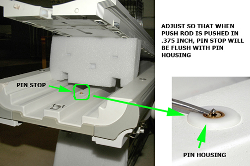
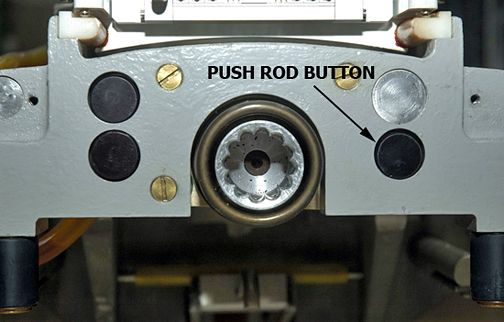

Operating Documentation
Direction 5500113, Rev# 3
Discovery MR450 1.5T Service Methods
Module Version 3.0, Version Date 8/19/08
Operating Documentation |
| Required Persons | Preliminary Reqs | Procedure | Finalization |
|---|---|---|---|
| 1 | 60 mins |
| Item | Qty | Effectivity | Part# | Manufacturer | |
|---|---|---|---|---|---|
| Non-Magnetic Service Tool Kit | 1 | - | 5112581 | - | |
| Item | Qty | Effectivity | Part# | Manufacturer | |
|---|---|---|---|---|---|
| Secondary Cradle Latch Actuating Cable (cut to 1000 mm in length) | 1 | - | 46-256080P1 | - | |
Undock Patient Table and move it from magnet room.
Remove Upper and Lower Base Covers. For more information, see the Patient Table Upper and Lower Base Cover Removal procedure.
Remove Front Base Cover.
Illustration 1: Front Base Cover

Manually slide cradle forward and prop up cradle to expose pin housing and push rod. Refer to the Removing Cradle Assembly procedure.
Illustration 2: Prop Up Cradle

Loosen set screw at end of push rod and cable feed lock nut to unfasten cable end.
Illustration 3: Push Rod

Pull cable out of pin housing.
Illustration 4: Pin Housing and Push Rod

Illustration 5: Pin Housing

Insert new cable through cable casing.
Route cable through cable casing.
Loop cable twice through hole in push rod and secure with set screw. Tighten securely to prevent cable from slipping.
Adjust cable so that when push rod button is pushed in 9.6 mm, pin stop is flush with pin housing. Use threaded cable adjuster for fine adjustment. Tighten lock nut after adjustment is complete, then cut off excess length of cable.
Illustration 6: Push Rod Button

Replace cradle, Front Base Cover, Upper and Lower Base Covers,
Return table to magnet room and dock the Patient Table.
Verify that release pin is flush to 1/16 inch (1.6 mm) below flush when table is docked.
No finalization steps.